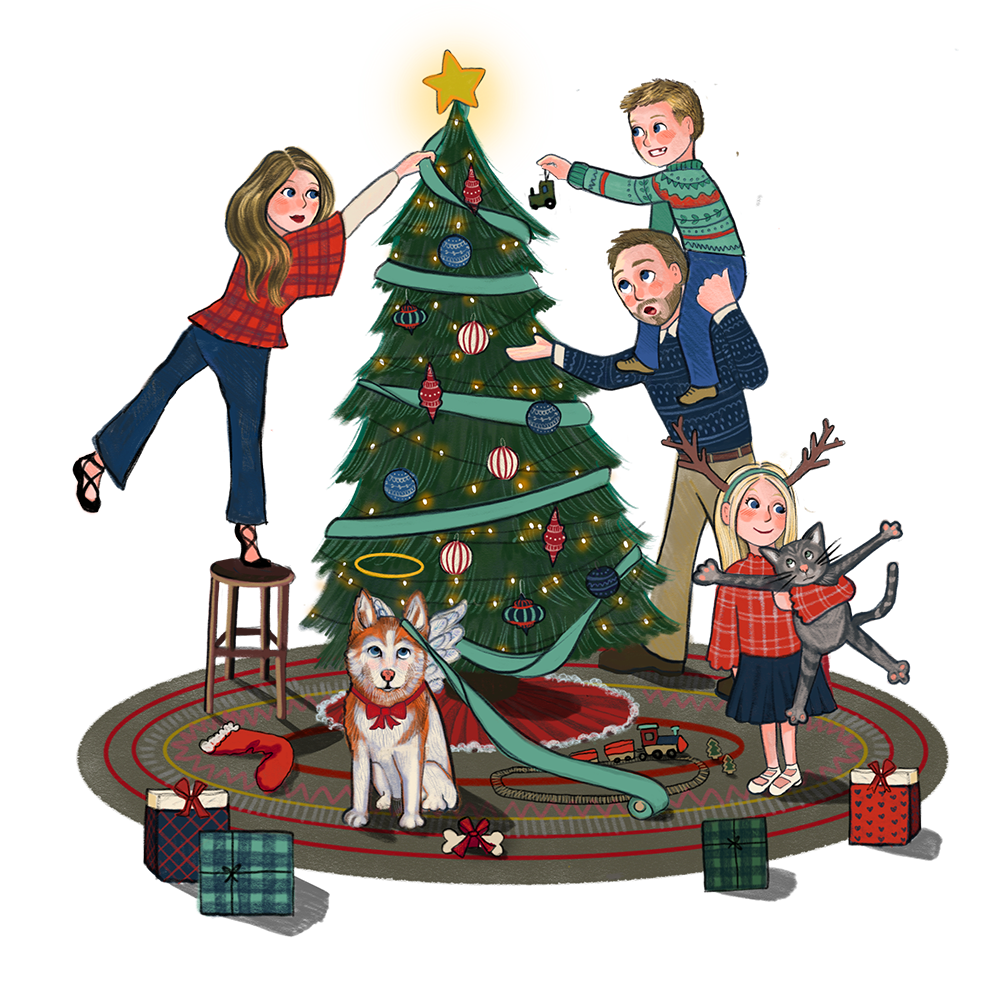

Illustrations
Inspired by the Starbuck's "Been There" series of mugs, I wanted something playful and personal to the many activities and characteristics of the family. To give some of the objects context, I created a scavenger hunt to be used on the back of the card. They included fun hints and riddles such as "Find the place where summers are better and the water is always cold," hinting to the lake where the family spends their summers.


Starbucks released a series of mugs called "Been There." I admired the loose sketch style and harmony of colors. I also admired the concept of the subjects depicted, showing some niche details of a city or location that only locals would be familiar with. Spinning the idea, I designed icons depicting niche details of a family, creating a deeply personal Holiday Card.

Each card that I create is designed to feel personal and intentional. They often reflect the family's personalities or depict key memories or moments. For example, this card highlights a family announcing they have moved houses. I combined hand illustrations through Pro-Create, and more thorugh Illustrator and Photoshop to achieve each final design.

Combining chaos with classiness, this client wished for a sweet Holiday scene that captures the craziness of the season. Some other details to add was their family dog that recently passed away and their new kitten that the young girl was obsessed with!


La Salle University Holiday Card
I was given the honor of creating La Salle's Holiday Card. I was asked to create a water color image of the grotto, a central location on campus. After some thought, I was inspired by an image I took of the grotto early in the morning. The sun was peaking through the trees behind and I thought about its resemblence to the holiday season. Both promise warmth and a new beginning so I made it the central focus of the design. I used a variety of digital brushes to obtain the watercolor effect and hand illustrated it using an Ipad.

The Grotto is a sacred place on campus where the the statue of the Virgin Mary can be seeing looking down on students. When illlustrating the image, I created a stark contrast between her figure and the cove behind her.
I took multiple pictures to use as a reference when recreating this scene. I imagened different angles such as from the benches that students sit at, or square across from the grotto. I decided on this angle because it placed the sunlight directly in the center of the composition. The burst of sun was only visible to the eye so I photoshopped the burst of light. One challenge that I faced was that the image was taken in the early September weeks when the weather was warm and everything was green. When illustrating, I added lots of snow and coolness to create a cold wintery scene.
Read more in La Salle Article